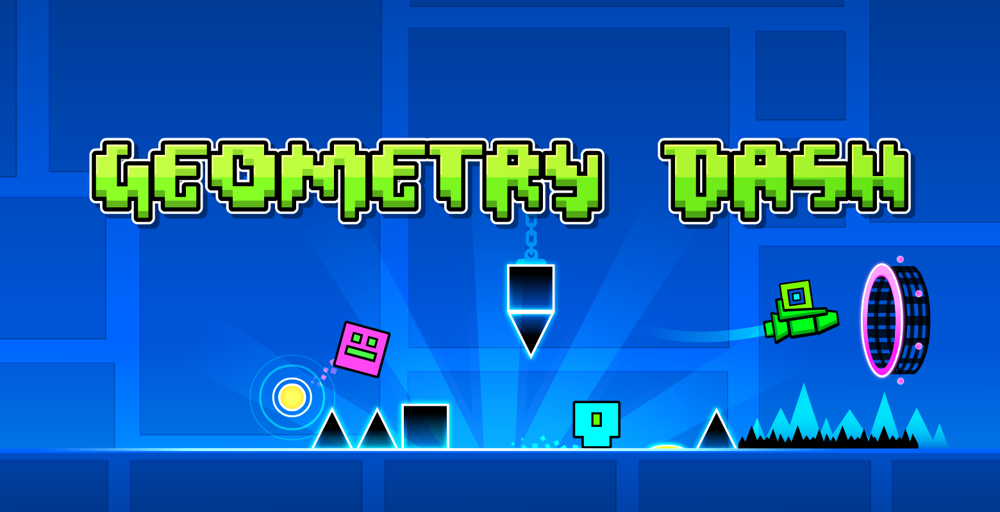

This is my favorite game because it is challenging and fun. I enjoy playing the extreme demon levels, which require precise timing and skill to complete. The game also has a great community of players who create and share their own levels, which keeps the game fresh and exciting.
One of my favorite levels is "Bloodbath," which is known for its difficulty and requires a lot of practice to complete. It is a true test of skill and perseverance, and I love the feeling of accomplishment when I finally beat it.
Overall, Geometry Dash is a game that I can always come back to and enjoy, and I highly recommend it to anyone who loves challenging platformers.
Bloodbath is a legendary community-created Extreme Demon level in Geometry Dash, hosted, verified, and published by Riot on August 12, 2015. GD Fan Fandom page.